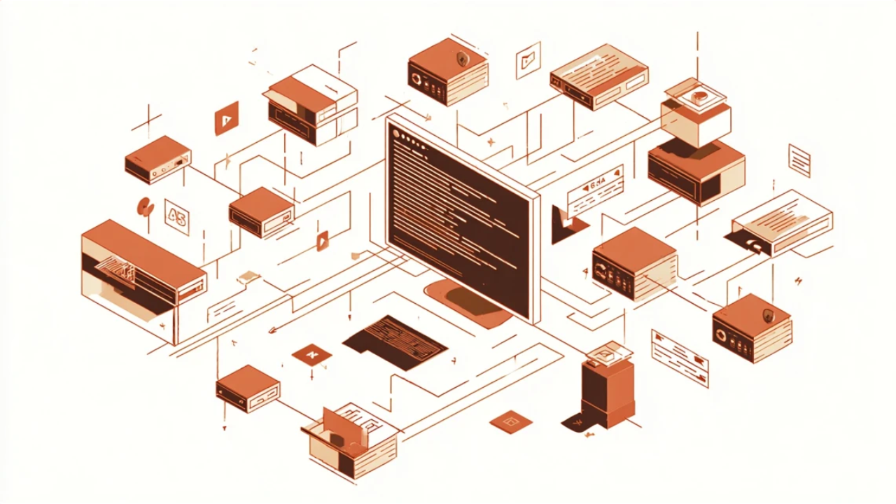

エージェント型AIコーディングの真髄を学ぶ。
公式ベストプラクティスに基づいた全42章 + 13種類のハンズオン。
v2.1.176対応 / Fable 5 / Skills / Hooks / MCP / Agent Teams / claude agents / /goal / /workflows / /cd
入門から上級まで、段階的にClaude Codeをマスター
13種類のテーマで実践的なスキルを習得
テーマを選び、準備物をその場でダウンロード。学ぶ章を順にこなし、最終成果物を受入基準で確かめて見比べる。
Mac / Windows 共通の ZIP で配布。展開して所定の場所に置くだけで使えます。
~/.claude/ はホームディレクトリ直下の 全プロジェクト共通の設定。スキル・コマンド・エージェントなどを置くとどの作業フォルダからでも呼び出せます。.claude/ は そのプロジェクト専用の設定。チームで共有したい設定は git にコミットします。skills/ = Skill、commands/ = スラッシュコマンド、agents/ = サブエージェント、hooks/ = フック、settings.json = 環境設定。Anthropicが推奨する7つの原則
Claude Code開発者本人が実践する運用テクニック
出典: Boris Cherny (@anthropicaiのClaude Code開発チーム)
よくある問題の解決策とFAQ
Claude Codeを効果的に使うためのチェックリスト。各項目を確認してベストプラクティスを実践してください。
セキュリティ要件の厳しい環境でも研修に使えるよう、外部送信を持たない構成にしています。
学習コンテンツと準備物は、企業ごとの組織ID・パスワード・閲覧期間でサーバー側（Vercel）が保護します。判定用に必要最小限の HTTP-only セッション cookie を1つだけ使用します。追跡には使いません。
表示テーマと表示言語のみブラウザの localStorage に保存します。外部には出ません。ブラウザのデータ削除で消去できます。
Content-Security-Policy で connect-src 'self' を指定。通信はログイン・セッション確認のための同一オリジン API に限られ、第三者への送信先はありません。スクリプトも同一オリジンのみです。
画面表示用 Web フォント（Google Fonts）だけ外部から取得します。完全な閉域で使う場合は、フォント同梱配信またはシステムフォント表示に切り替えてください。
配布する教材・サンプルはすべて架空の内容です。実在の個人・組織の情報は含みません。演習は手元の環境で実施し、本サイトが入力を受け取ることはありません。
配信サーバー側でも HTTP セキュリティヘッダ（CSP / X-Content-Type-Options / X-Frame-Options / Referrer-Policy / HSTS）を付与しています。セッション cookie は HttpOnly・Secure・SameSite=Lax で、閲覧期間を超えて有効になることはありません。
名前・概要・目的・起動タイミング・活用例・サンプル・補足。詳細は 公式ドキュメント を参照してください。
| 名前 | 概要 | 目的 | サンプル |
|---|---|---|---|
| /help | ヘルプ表示 | コマンド・使い方の確認 | /help |
| /init | CLAUDE.md 生成 | プロジェクト用 CLAUDE.md を自動生成 | /init |
| /clear | 会話履歴クリア | コンテキストをリセット | /clear |
| /compact | コンテキスト圧縮 | 過去会話を要約して圧縮（70%超で推奨） | /compact |
| /cost | コスト確認 | トークン使用量と費用を表示 | /cost |
| /diff | 変更差分表示 | Claudeが行った全変更のインタラクティブdiff | /diff |
| /copy | レスポンスコピー | 特定の応答をクリップボードにコピー | /copy 3 |
| /rewind | 以前の状態に戻る | コード・会話を巻き戻す | Esc Esc |
| /fork | 会話の分岐 | 別の会話タブを開く | /fork |
| /rename | セッション名変更 | セッションに名前をつける | /rename my-task |
| 名前 | 概要 | 目的 | サンプル |
|---|---|---|---|
| /plan | Plan Mode起動 | 読取専用で計画を立てる（コード変更なし） | /plan 認証機能の設計 |
| /effort | Effortレベル設定 | モデルの思考深度を low/medium/high で指定 | /effort high |
| /voice | Voice Mode起動 | スペースバーで音声入力（段階的ロールアウト中） | /voice |
| /vim | Vimキーバインド | プロンプト入力にvimキーバインドを適用 | /vim |
| /loop | 定期実行 | 指定間隔でプロンプトを繰り返し実行 | /loop 5m check deploy |
| /teleport | セッション転送 | ローカルとWeb間でセッションを転送 | /teleport |
| /review | コードレビュー | 変更内容のレビューを依頼 | /review |
| /fast | Fast Mode切替 | 同モデルで高速出力モードに切り替え | /fast |
| 名前 | 概要 | 目的 | サンプル |
|---|---|---|---|
| /plugins | プラグイン管理 | 一覧・インストール・無効化 | /plugins |
| /tasks | タスク一覧 | 進行中タスクを一覧表示 | /tasks |
| /learn | 知識のSkill化 | 手順・発見をSkillとして保存 | /learn |
| /keybindings | キーバインド編集 | ~/.claude/keybindings.json を開く | /keybindings |
| /permissions | 権限管理 | ツール実行権限の許可・拒否を設定 | /permissions |
| 名前 | 概要 | サンプル |
|---|---|---|
| @ | ファイル・フォルダをコンテキストに含める | @README.md を参照して... |
| ! | Claudeを経由せずBashを実行 | !npm run build |
| /btw | 処理中にサイド質問（会話履歴を汚さない） | /btw TypeScriptのバージョンは？ |
| 名前 | 概要 |
|---|---|
| Enter | メッセージ送信 |
| Shift+Enter | プロンプト内で改行（v2.1.0追加） |
| Ctrl+U | 行を全削除（v2.1.118で挙動変更、行頭まで削除は Ctrl+Y） |
| Esc | 操作中断（コンテキストは保持） |
| Esc Esc | コード復元（巻き戻し） |
| Shift+Tab | モード切替（Normal → Auto-accept → Plan） |
| Ctrl+F (2回) | 全バックグラウンドエージェントを停止 |
| 名前 | 概要 |
|---|---|
| claude -p "prompt" | 非インタラクティブモード（CI/CD向け） |
| claude -n "name" | セッション名を指定して起動 |
| claude -w / --worktree | 隔離されたgit worktreeで起動 |
| claude mcp add | MCPサーバーを対話的に追加 |
| claude mcp serve | Claude Code自身をMCPサーバーとして公開 |
| --output-format stream-json | JSON形式でストリーム出力（パイプ連携用） |
| モデル | コンテキスト | 主な用途 | 備考 |
|---|---|---|---|
| Fable 5 | 1Mトークン | 最高難度の推論・長期エージェント作業 | 2026/6/9リリース。最も高性能な一般公開モデル。Adaptive Thinking常時有効。$10/$50 per MTok |
| Opus 4.8 | 1Mトークン | 複雑な推論・エージェントコーディング | 2026/5/28リリース・v2.1.154でデフォルトに、Adaptive Thinking対応、effortデフォルトhigh。$5/$25 per MTok |
| Sonnet 4.6 | 1Mトークン | 日常的なコード生成（推奨） | 速度と知性のベストバランス。$3/$15 per MTok |
| Haiku 4.5 | 200kトークン | 軽量タスク・トリアージ | 2025/10リリース、低コスト高速。$1/$5 per MTok |
| opusplan | - | Plan=Opus / 実行=Sonnet のハイブリッド | 長時間タスクの省コスト運用 |
| 機能 | 概要 |
|---|---|
| Claude Fable 5 | 2026/6/9リリース。最も高性能な一般公開モデル。Adaptive Thinking常時有効、1Mコンテキスト |
| /cd | セッションを新しいワーキングディレクトリに移動（v2.1.176） |
| /usage-credits | 使用クレジット表示（/extra-usageを改名） |
| /plugin list | インストール済みプラグインをリスト表示 |
| --fallback-model | プライマリモデル利用不可時のフォールバックモデル指定フラグ |
| --safe-mode | 全カスタマイズを無効化して起動するフラグ（CLAUDE_CODE_SAFE_MODE環境変数でも指定可） |
| Opus 4.8 | 新デフォルトモデル（v2.1.154）。effortデフォルトhigh、Fast modeは2倍レート・2.5倍速度 |
| dynamic workflows | 数十〜数百のサブエージェントをスクリプトでオーケストレーション（v2.1.154） |
| /workflows | dynamic workflowの実行状況を表示（v2.1.154） |
| /code-review | 正確性バグを指定レベルで報告。--commentでGitHub PRにコメント投稿（/simplifyを改名） |
| /reload-skills | 再起動なしでskillディレクトリを再スキャン（v2.1.157） |
| auto mode（Pro対応） | Proプランでauto modeが利用可能に。Sonnet 4.6もサポート（v2.1.143） |
| claude agents | エージェントビュー — --add-dir, --model, --effort等のフラグ対応（v2.1.139/142） |
| /goal | 完了条件を設定し、条件を満たすまで継続実行（v2.1.139） |
| auto permission mode | 安全操作は自動許可・高リスクは自動ブロック。hard_deny/soft_deny対応 |
公式 Changelog ／ モデル比較 で全機能を確認できます。最終更新: 2026年6月15日（月2回自動アップデート）
企業ごとに発行された組織IDとパスワードを入力してください。閲覧期間内のみ学習コンテンツに入れます。
トップとプライバシーはログイン不要で閲覧できます。